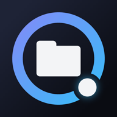
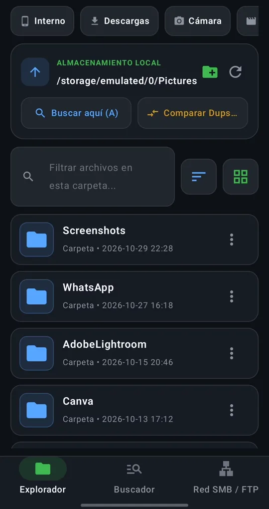
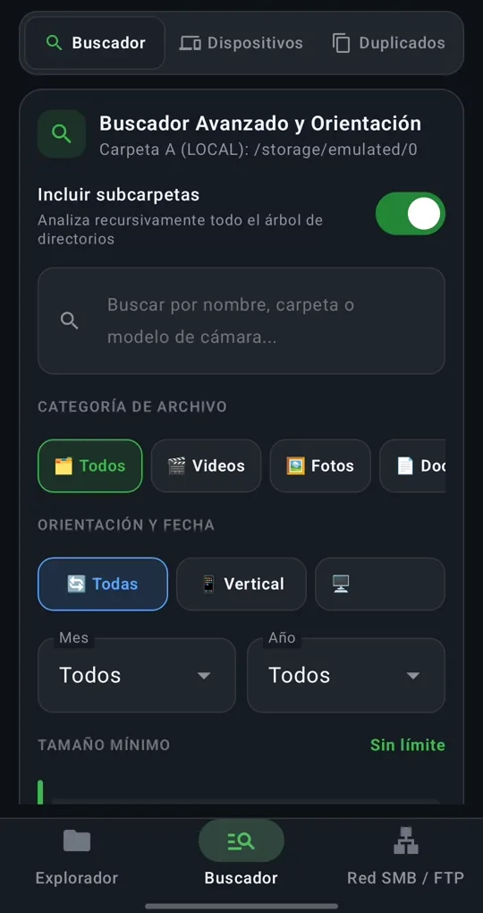

Qubit Explorer
App Android
Explorador de archivos que trabaja igual con el almacenamiento del teléfono y con carpetas compartidas en la red local.
- Conexión a servidores SMB y FTP
- Búsqueda por tipo, orientación y tamaño, y limpieza de duplicados
- Visores de PDF y documentos, editor de texto y archivos comprimidos

